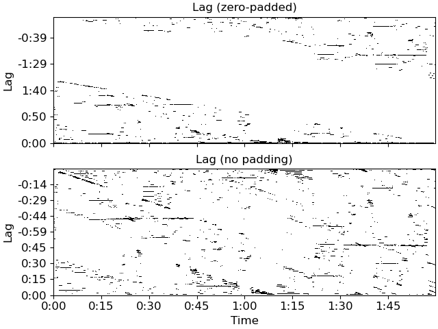

librosa.segment.recurrence_to_lag¶
- librosa.segment.recurrence_to_lag(rec, *, pad=True, axis=- 1)[source]¶
Convert a recurrence matrix into a lag matrix.
lag[i, j] == rec[i+j, j]This transformation turns diagonal structures in the recurrence matrix into horizontal structures in the lag matrix. These horizontal structures can be used to infer changes in the repetition structure of a piece, e.g., the beginning of a new section as done in 1.
- 1
Serra, J., Müller, M., Grosche, P., & Arcos, J. L. (2014). Unsupervised music structure annotation by time series structure features and segment similarity. IEEE Transactions on Multimedia, 16(5), 1229-1240.
- Parameters
- recnp.ndarray, or scipy.sparse.spmatrix [shape=(n, n)]
A (binary) recurrence matrix, as returned by
recurrence_matrix- padbool
If False,
lagmatrix is square, which is equivalent to assuming that the signal repeats itself indefinitely.If True,
lagis padded withnzeros, which eliminates the assumption of repetition.- axisint
The axis to keep as the
timeaxis. The alternate axis will be converted to lag coordinates.
- Returns
- lagnp.ndarray
The recurrence matrix in (lag, time) (if
axis=1) or (time, lag) (ifaxis=0) coordinates
- Raises
- ParameterErrorif
recis non-square
- ParameterErrorif
See also
recurrence_matrixlag_to_recurrenceutil.shear
Examples
>>> y, sr = librosa.load(librosa.ex('nutcracker')) >>> hop_length = 1024 >>> chroma = librosa.feature.chroma_cqt(y=y, sr=sr, hop_length=hop_length) >>> chroma_stack = librosa.feature.stack_memory(chroma, n_steps=10, delay=3) >>> recurrence = librosa.segment.recurrence_matrix(chroma_stack) >>> lag_pad = librosa.segment.recurrence_to_lag(recurrence, pad=True) >>> lag_nopad = librosa.segment.recurrence_to_lag(recurrence, pad=False)
>>> import matplotlib.pyplot as plt >>> fig, ax = plt.subplots(nrows=2, sharex=True) >>> librosa.display.specshow(lag_pad, x_axis='time', y_axis='lag', ... hop_length=hop_length, ax=ax[0]) >>> ax[0].set(title='Lag (zero-padded)') >>> ax[0].label_outer() >>> librosa.display.specshow(lag_nopad, x_axis='time', y_axis='lag', ... hop_length=hop_length, ax=ax[1]) >>> ax[1].set(title='Lag (no padding)')
